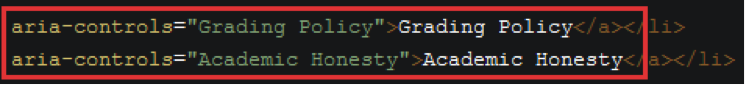
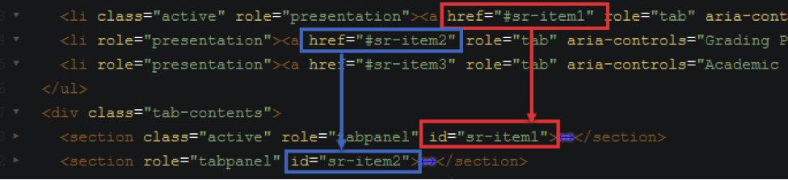

A great way to handle a large amount of information on a page without losing usability if used correctly.
To organize information with tabs, create a <div> element with the with-tabs class. Nested inside the <div> element, a <ul> and another <div> are required. The nested <ul> has the tabs class, and the nested <div> class has the tab-contents class. Each <li> element inside the <ul> element is the title of the tab, and each <section> element nested inside the inner <div> element holds the content of the tab according to the order of the <li> elements inside the <ul> element.
Notes: apply the active class on the <li> and <section> elements to specify the default tab and tab content to be opened on page load. The active class is required for both elements.
Naming the tab: In the a tag inside the li element you’ll need to modify aria-controls (green text) to reflect the title of the tab (white text). The screen reader will say the text in white. In full versions of accessibility software, aria-controls creates a button in the interface and uses the text in green for the button’s text. This button will be used to toggle between tabs on the accessibility software.

Adding tabs: Each href attribute associated with a tab must have a unique identifier (e.g. #sr-item1). The section associated with this tab must also use that same ID minus the pound sign (e.g. #sr-item1). This tells the screen reader which section goes with which tab. When adding additional tabs, continue the naming/numbering sequence.

Important If you have two separate tab instances on the same content page (not recommended), the IDs cannot be shared. That is, they cannot both use the sr-item1 ID value. A different ID will need to be used. To avoid conflict with existing CSS IDs, prefix the value of the new ID with sr-, which stands for screen reader.
See the Pen Tab by Ethan Lin (@Lin87) on CodePen.
The example above is not working! Fear not! The example above stopped working after five seconds. This is a performance measure that CodePen puts in place to prevent looping scripts and animations. Place the cursor over the example and click the "RERUN" button to get it working again for another five seconds.
Color can be added to the tab by specifying success (green), info (blue), warning (yellow), or danger (red) class to the <li> element.
Making Tabbed Content Accessible
Please pay attention to the ARIA markups in the HTML.
div tag has the role attribute with the value of tabpanel. This is telling the screen-reader that it is about to interact with a tabbed user interface.ul tag has the role attribute with the value of tablist. This is telling the screen-reader that those are the tabs.li tag inside the ul element has the role attribute with the value of presentation. This is telling the screen-reader that the element is for visual only. It does not need to read the extra markups.a tag inside the li element has the role attribute with the value of tab and aria-controls attribute with the value of whatever the tab name is (e.g., item1, in the example below). This is telling the screen-reader that the element is a tab, and the control name for the tab is what the value that you put in the aria-controls attribute.section tag has the role attribute with the value of tabpanel and an unique ID. The value of this ID must match the value in the href attribute of the a tag in the ul element. This is telling the screen-reader that the content in this tab panel is linked to the specific tab above by the association the unique ID.sr-, which stands for screen reader. Make sure to change those values after you copy and pasted them.